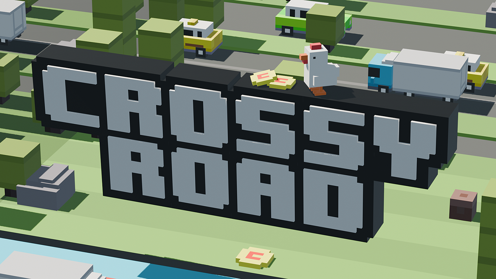
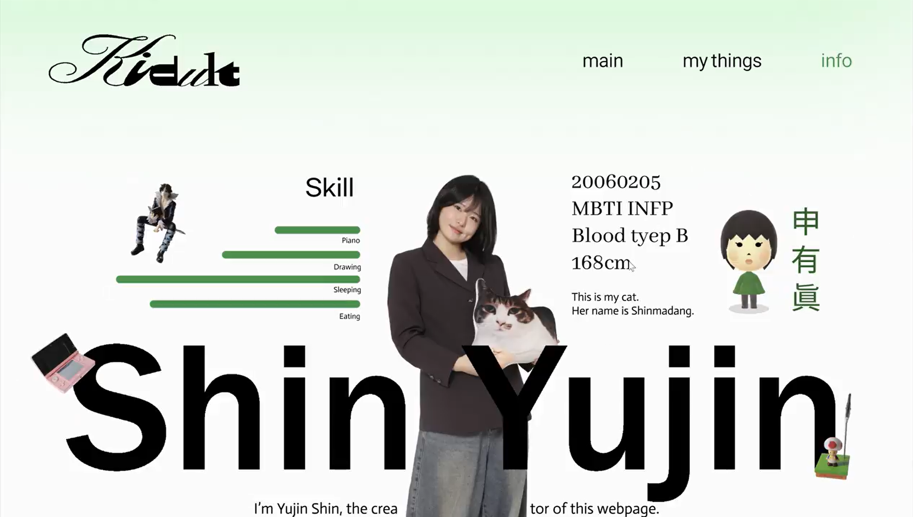
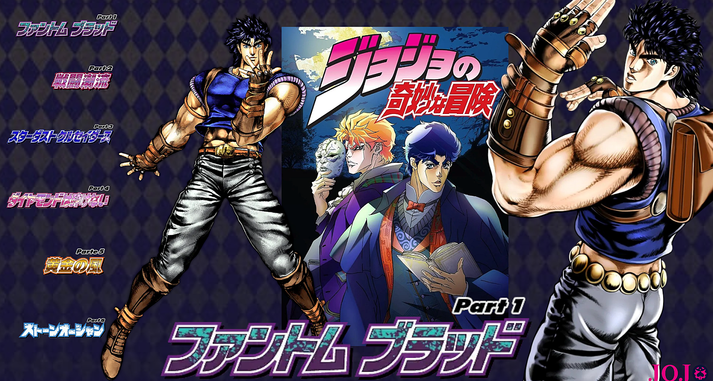

Project

가장 마음에 드는 것
3D모션그래픽스 직무1
블랜더를 이용해 '길건너 친구들'에 나오는 캐릭터와 오브젝트를 직접 만드는 작업이 재밌었고, 애니메이션같은 연출과 모션을 잘 표현해 낸 것 같아서 가장 마음에 든다.

기억에 남는 것
디자인기초 직무2
나를 소개하는 사이트를 내 취향대로 디자인 할 수 있다는 것과, 내가 좋아하는 것들을 드러낼 수 있다는 것 덕분에 가장 기억에 남고 재밌었던 것 같다.

재밌었던 것
실감미디어기초
한 때 좋아했던 애니메이션인 죠죠를 주제로 과제를 만드는 것과, 각 시즌 주인공들로 콜라주를 만드는것이 정말 재밌었다.